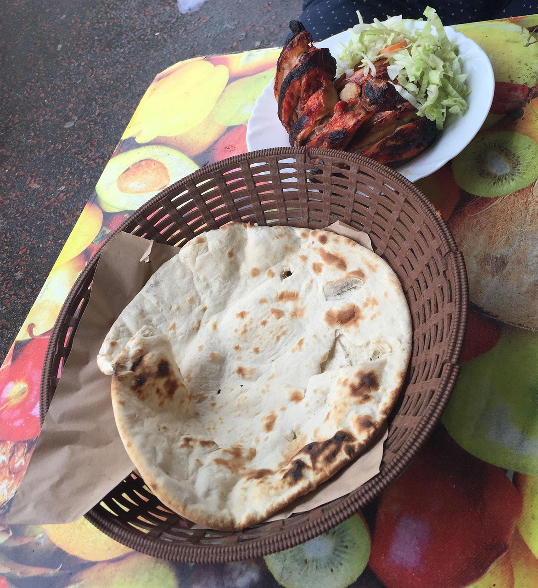

Breakfast Sandwitch
This is a simple breakfast recipe that can be made in 10 minutes.
Tasty Pepperoni Pizza
This is a quick and easy Pizza recipe that can be made in 30 minutes.

Rice and chicken curry
A delicious chicken curry paired with rice

A chicken-egg wrap
This is a simple wrap made using eggs.

Naan Bread
This is a recipe for a soft naan bread
Fried Rice Recipe
This is a fried rice recipe